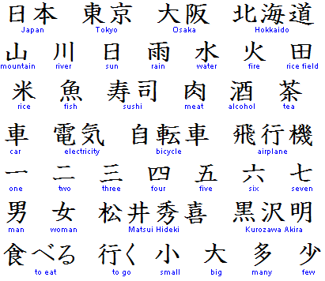
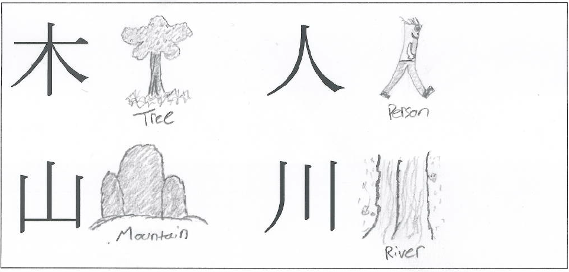
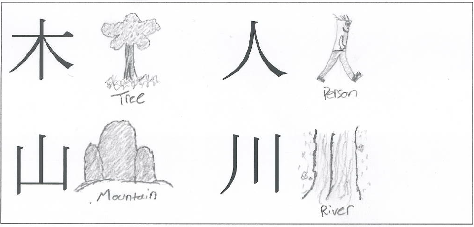
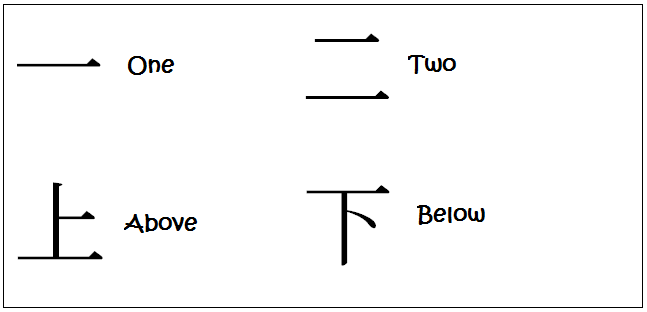
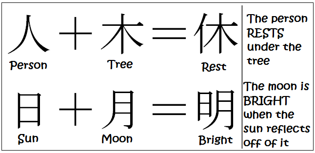
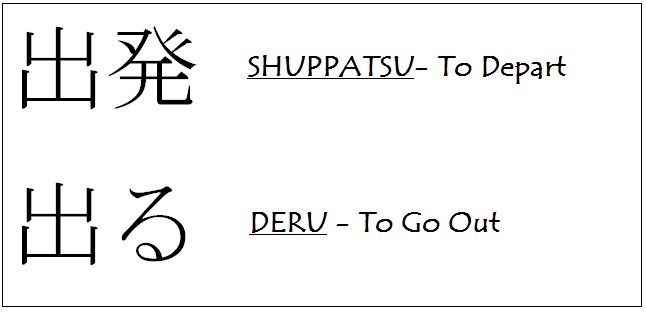

 

  
Kanji - 漢字
Kanji (漢字), one of the three scripts used in the Japanese language, are Chinese characters, which were first introduced to Japan in the 5th century via the Korean peninsula. Kanji are ideograms, i.e. each character has its own meaning and corresponds to a word. By combining characters, more words can be created. For example, the combination of "electricity" with "car" means "train". There are tens of thousands of characters, of which 2000 to 3000 are required to understand newspapers. A set of 2136 characters has been officially declared as the "kanji for everyday use".
The History/Origin of Kanji
Did you know that the Japanese did not have a written system for their language until the sometime between the 4th and 5th century AD? The Chinese system of writing was brought to Japan through Korean missionaries. Originally only the lords and monks were taught how to read and write. But of course, the Japanese language already existed so they couldn’t just use the Chinese writing system exactly the same way that the Chinese did. That’s why the Japanese created Hiragana and Katakana. The Kanji (Chinese characters) also had to have their pronunciations adapted into the Japanese language. This was due to the limited number of different sounds in Japanese. But the original meanings ware usually kept the same.
Different Types of Kanji
Kanji are idiographic, meaning they represent a concept or idea, but not a sound. By contrast, both Hiragana and Katakana represent sounds, but not meaning. Each letter in the English alphabet also represents a sound and not a meaning. There are over 50,000 known Kanji in existence! Luckily only about 2,000 are considered the “daily use” Kanji. Also, there are several different types of Kanji based on how they were created and what they mean. Let’s take a look at a few of them. Pictorial Kanji are a written representation of the physical object they represent. Indicative Kanji represent abstract concepts that don’t have a definite particular shape. Compound Idiographic Kanji are created by taking stand alone Kanji and then combining them together to create a new one.
How to Write Kanji (Basic Overview)
I wrote a more in depth post on how to write Kanji a while ago. If you’re interested, check
it out through the link below.What I failed to do in that earlier post was to explain why it is
important to know the correct stroke order.
The first reason is so that you can write in a smooth and efficient manner, much like cursive writing in
English.
The other reason is so that when you encounter a new Kanji, you can deconstruct it in your mind using
the proper stroke order and figure out how many strokes the Kanji is composed of. This is important
because most Kanji dictionaries are organized by stroke count.
So, here are the basic principles to remember when writing Kanij. This will work for all but the few
irregulars.
- Write the top part before the bottom part
- Write the left part before the right part
- Horizontal strokes before vertical ones
- Middle part first when similar strokes are to the left and right
- Outside part before the inside part that it encompass
- Strokes that bend to the left before ones that bend to the right
- A stroke that pierces from top to bottom after rules 1-6
- A stroke that pierces the middle from left to right after rules 1-7
How to Read Kanji (Basic Overview)
Most Kanji have mutiple ways to pronounce them depending on the context they’re used in.
There are two different type of readings. They are:
- The original Chinese reading (on’yumi)
- The Japanese reading (kun’yumi)
Usually when a Kanji is following immediately by another Kanji they will both use the Chinese reading (on’yumi). And when the Kanji is by itself (or with kana) then it uses the Japanese reading (kun’yumi). Think of these as guidelines and not absolute rules.